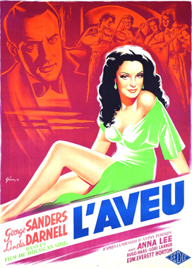
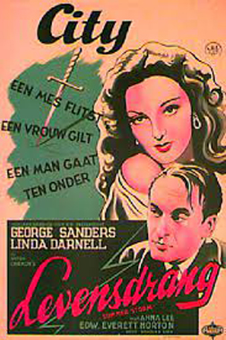
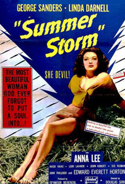

Summer Storm
George Sanders
Edward Everett Horton
Lori Lahner
John Philliber
Sig Rumann
John Abbott
André Charlot
SYNOPSIS
In 1919, in Russia, the former Count Volsky visits a newspaper publisher, Nadena Kalenin, with a manuscript that he had stolen from his friend Fedor Mikhailovich Petroff. Nadena gives some money in advance and reads the document.
Rewinding seven years to the summer of 1912, the aristocratic and handsome Petroff is the examining magistrate in a summer resort in Imperial Russia. His fiancée Nadena is spending the summer vacation there with her parents who own a publishing house. When Petroff visits his friend Count Volsky, he meets the gorgeous peasant Olga Kuzminichna Urbenin (Linda Darnell) and he falls in love for her. Olga is an ambitious woman engaged to be married with the humble peasant Anton Urbenin (Hugo Haas) but she flirts with Petroff. When Nadena witness Petroff and Olga together, she calls off her engagement with Petroff. Soon Petroff learns that the gold-digger Olga has set her cap at Count Volsky, cheating not only her husband but also him. When Olga tells Petroff that she will marry Volsky, a tragedy happens.
Director Douglas Sirk began developing this project of Chekhov's The Shooting Party while working at the UFA Studios in Germany. After fleeing to the United States in 1939, he continued developing the project, working for a time with James M. Cain, but discarding that draft, saying it was too American. Sirk receives screen credit for his work adapting the story.
The film was notable in changing Linda Darnell's public image. While she had previously been playing innocent, good-natured roles, her performance as the seductive and manipulative Olga changed the public's opinion of her and transformed her into a sex symbol. She would go on to play more femme fatales in her career. This is one of a handful of films in which Sanders’ singing voice can be heard (and in his native-born Russian). Like The North Star, this film was released in the United States during a period of pro-Russian sentiment and interest by the Allies at the height of World War II.


